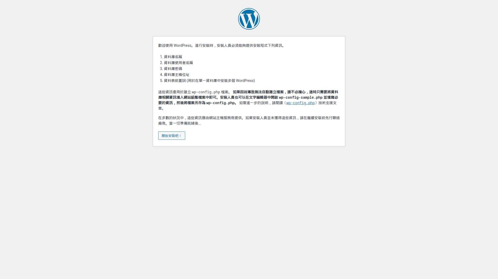
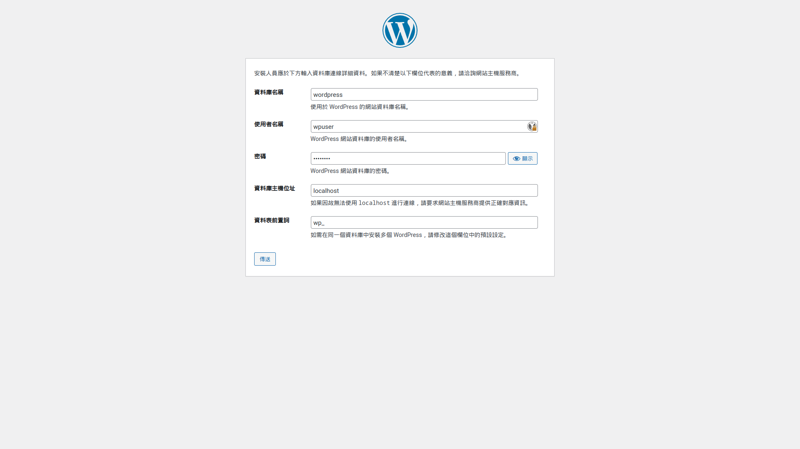
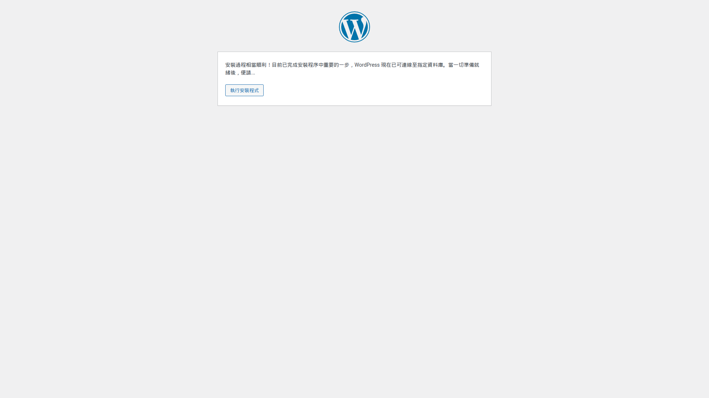
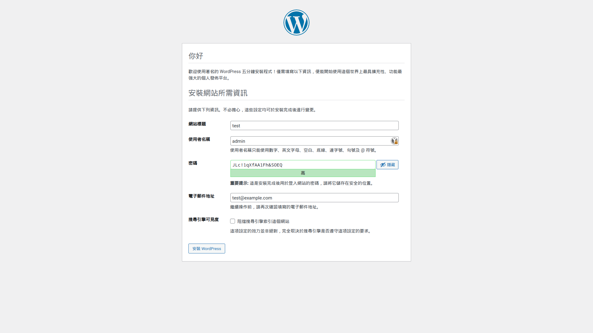
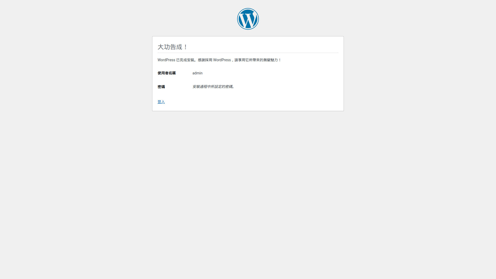
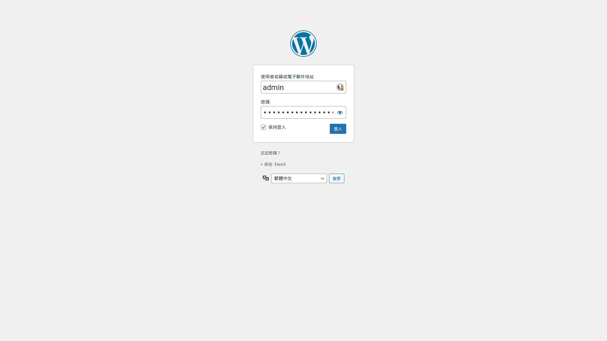
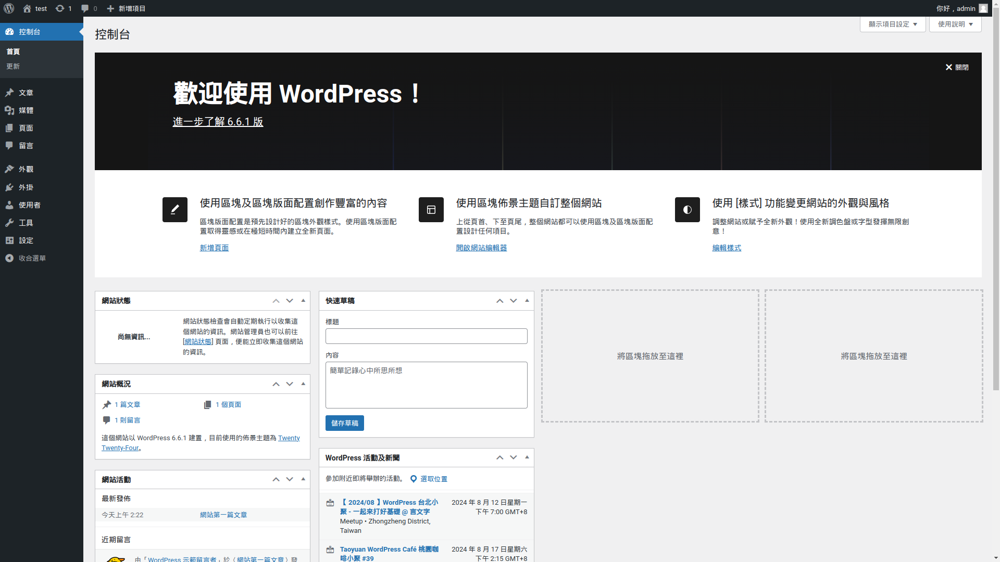

前言
這算是之前搭建部落格時考慮過的方案，不過後來還是選擇了hexo這種靜態框架，所以就記錄一下查詢資料和架設的歷程。
架設
安裝
先下載安裝必要的組件
1 2 3 4 5 6 7 8 9 10 11 12 13 14 15 $ sudo apt install nginx nginx-extras $ $ sudo apt install mariadb-server $ $ sudo apt install php php-fpm php-cli php-mysql php-mbstring php-xml php-gd php-curl php-ssh2 php-imagick php-json php-tokenizer php-zip php-intl $ $ wget https://tw.wordpress.org/latest-zh_TW.tar.gz $ $ tar -zxvf latest-zh_TW.tar.gz $ $ sudo mkdir -p /var/www/sitename $ sudo mv wordpress/* /var/www/sitename/ $ $ chown -R www-data:www-data /var/www/sitename$ chmod -R 755 /var/www/sitename
Database配置
使用root執行mysql_secure_installation
1 # mysql_secure_installation
跟著引導安裝即可，說明很完全
執行mysql，進入Database
1 2 3 4 5 6 7 8 9 10 11 12 13 14 # 可以使用其他的名稱來命名Database，這裡以wordpress作為範例，如果改名後面也要更改none )]> CREATE DATABASE wordpress;1 row affected (0.002 sec)none )]> GRANT ALL PRIVILEGES ON wordpress.* TO "wpuser"@"localhost" IDENTIFIED BY "passwd";0 rows affected (0.008 sec)none )]> FLUSH PRIVILEGES;0 rows affected (0.003 sec)none )]> exit
網頁設定
php
編輯/etc/php/8.2/fpm/php.ini，搜尋這三個設定並更改，如果php版本較高，記得更改對應的位置
1 2 3 cgi.fix_pathinfo =0 upload_max_filesize = 256 Mpost_max_size = 256 M
編輯/etc/php/8.2/fpm/pool.d/www.conf，這些應該是預設值，確認一樣即可
1 2 3 listen = /run/php/php8.2-fpm.sock
重啟php-fpm
1 2 # systemctl enable --now php8.2-fpm # systemctl restart php8.2-fpm
nginx
編輯/etc/nginx/nginx.conf，修改對應的部分
1 2 3 4 5 6 7 8 9 event{
編輯/etc/nginx/fastcgi_params，在最後加上設定
1 fastcgi_param SCRIPT_FILENAME $document_root$fastcgi_script_name;
新增/etc/nginx/sites-available/wordpress，編輯virtual server設定，這個設定為http站點，且設定為default_server，可依照自己需求進行更改。
1 2 3 4 5 6 7 8 9 10 11 12 13 14 15 16 17 18 19 20 21 22 23 24 25 26 27 28 29 30 31 32 33 34 35 36 37 38 39 40 41 42 43 44 45 46 server {
最後將站點啟用並重啟nginx
1 2 3 4 5 6 7 8 9 10 11 12 13 $ $ sudo mkdir -p /var/log/nginx/wordpress/ $ $ sudo ln -s /etc/nginx/sites-available/wordpress /etc/nginx/sites-enabled/wordpress $ $ sudo rm /etc/nginx/sites-enabled/default $ $ sudo nginx -t $ $ sudo systemctl enable --now nginx.service $ $ sudo nginx -s reload
WordPress安裝
在完成前面的設定後使用瀏覽器打開你架設WordPress服務器的IP，應該會看到這個頁面

接下來就跟著導引安裝即可
資料庫名稱使用剛剛Database設定部分資料庫的名字，帳號和密碼同樣也是按照設定的填

如果都沒填錯，那麼應該就會看到這個畫面，執行安裝即可

接下來就是WordPress站點的設定，同樣也是自己按需填寫即可，這邊填的都是範例資料

這樣就完成WordPress的安裝了，登入即可開始Wordpress網站的設定



參考